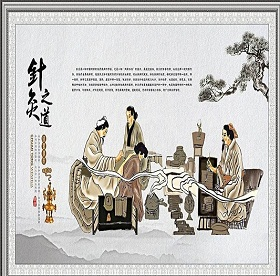

科室介绍
以“医疗技术”为核心，提高病人生活质量为原则，坚持走中医路线，发展具有中医特色疗法和西医康复知识结合的中医康复科(中医特色疗法科)。 以传统中医中药内服外用、针灸、推拿、理筋正骨整脊、中药熏蒸、穴位注射、穴位埋线、耳穴、灸疗等中医特色治疗技术手段，结合现代医学理论，擅长对颈肩腰腿痛病症、骨病、骨折术后功能康复；脑溢血、脑梗塞的功能康复治疗；糖尿病康复；肿瘤康复；产后康复五大康复体系，其医学理论扎实具有较深的中医文化底蕴。康复科经10余年的发展与创新，,现科室拥有一批技术精湛、医德高尚以老、中、青相结合的医疗队伍，已悄然成为了丹东地区最具代表性的中医康复品牌科室。
